Fine Dining Experience · Düsseldorf
Kaukasisch inspirierte & mediterrane Küche

Vom Kaukasus
an den Rhein
Zwischen Schwarzem Meer und Kaspischem Meer, unter den Fünftausendern des Großen Kaukasus, liegt eine der ältesten Ess- und Weinkulturen der Welt. Hier wird seit 8.000 Jahren Wein in Qvevri-Amphoren vergoren, hier bedeutet ein gedeckter Tisch – die Supra – Einladung, Fest und Freundschaft zugleich.
Diese Geschichte bringen wir nach Düsseldorf: an die Grafenberger Allee, mitten ins Rheinland.
„Wo Walnuss, Granatapfel und Feuer sich begegnen:
die Aromen des Kaukasus, neu erzählt am Mittelmeer."
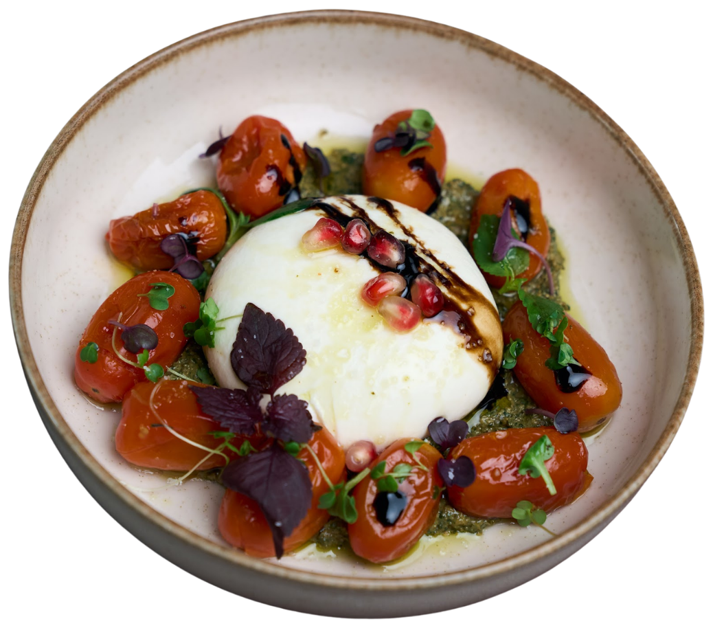
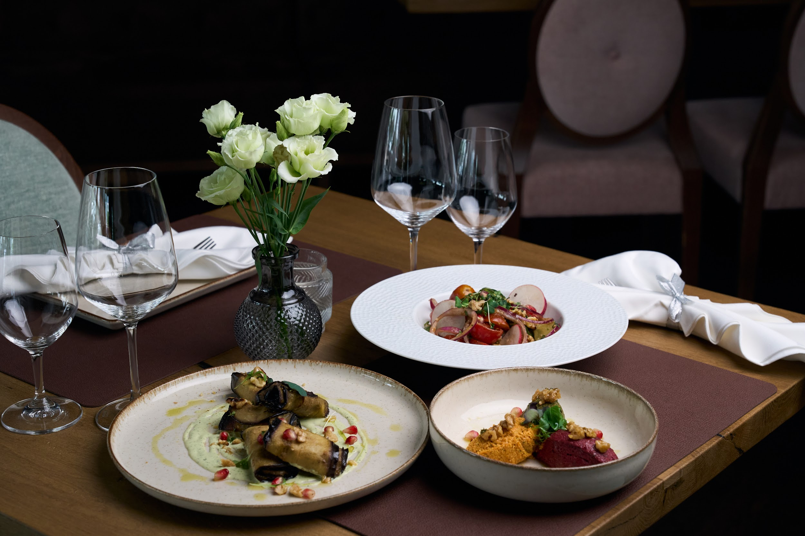
Zwei Welten,
eine Handschrift
Unsere Küche verbindet die Tiefe des Kaukasus – Walnuss, Koriander, Granatapfel, Adjika und das offene Feuer – mit der Leichtigkeit des Mittelmeers.
Jedes Gericht entsteht aus sorgfältig ausgewählten Produkten: vom handgefalteten Khinkali bis zu 48 Stunden sous-vide gegarten Wagyu Short Ribs vom Lavastein-Grill.
Mehr erfahren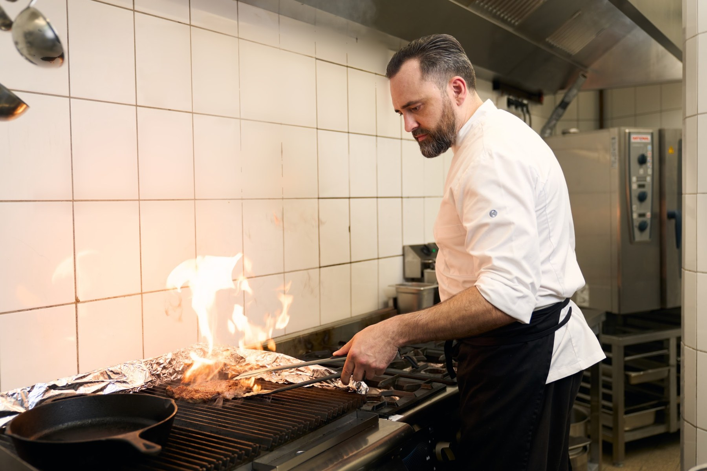
Warum Tamare?
Der Name ist eine Liebeserklärung: Auf Reisen durch Georgien haben sich unser Inhaber und seine Frau in dieses Land verliebt – in die Landschaften zwischen Schwarzem Meer und Kaukasus, in die Gastfreundschaft, in die Küche.
„Tamare" erinnert an Königin Tamar, unter der Georgien im 12. Jahrhundert sein Goldenes Zeitalter erlebte. Ihr Name steht bis heute für Großzügigkeit und Kultur – genau das, was wir an unseren Tisch nach Düsseldorf bringen.
„Ein Gast ist ein Geschenk Gottes"
– so sagt man in Georgien.
Seien Sie unser Gast.
Wann Sie uns finden
Willkommen im Tamare
Fine Dining an der Grafenberger Allee: Das Tamare bringt die Gastfreundschaft des Kaukasus und die Aromen des Mittelmeers nach Düsseldorf – in einem Rahmen, der zum Verweilen einlädt.
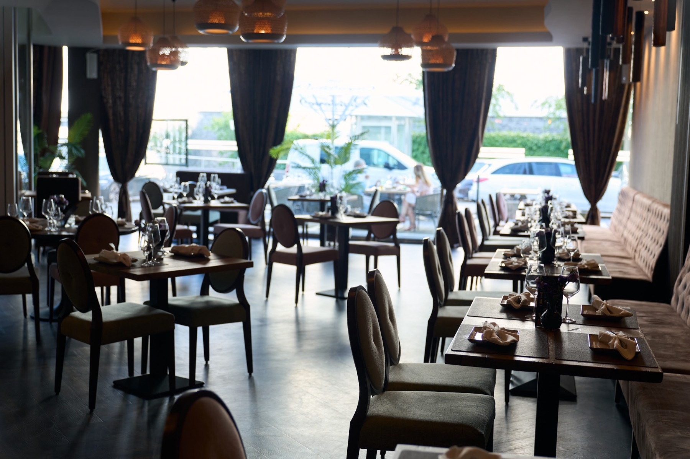
Ein Raum zum Verweilen
Warme Hölzer, gedämpftes Licht und samtige Sessel in Rosé und Salbeigrün: Unser Gastraum an der Grafenberger Allee verbindet großzügige Fensterfronten mit der Intimität einzelner Nischen – lichtdurchflutet und offen am Tag, kerzenwarm am Abend.
Ob Dinner zu zweit, Familienfeier oder ein Abend mit Freunden – hier findet jeder Anlass seinen Platz.
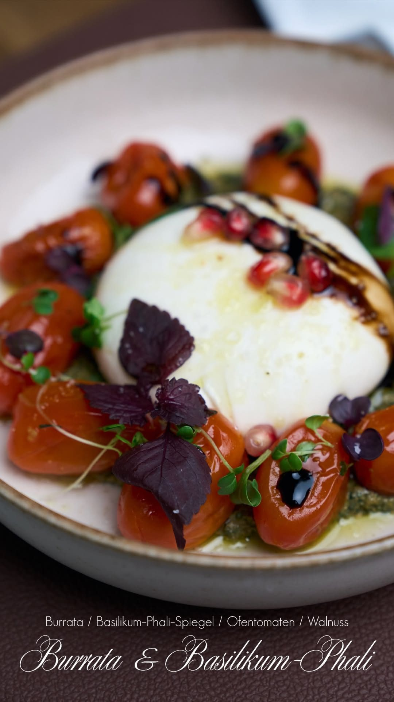
Supra – der gedeckte Tisch
In Georgien ist ein gedeckter Tisch mehr als eine Mahlzeit: Er ist Einladung, Fest und Begegnung zugleich. Diese Idee tragen wir ins Tamare – mit Gerichten, die zum Teilen gemacht sind, und einem Service, der Gastfreundschaft ernst nimmt.
Walnusscremes und Phali, handgefaltete Khinkali, Fleisch und Fisch vom Lavastein-Grill – begleitet von georgischen Weinen aus der Qvevri und Klassikern aus Deutschland und Italien.
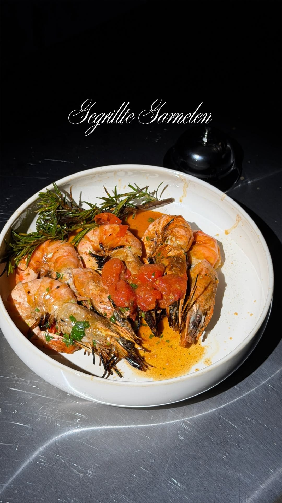
Feuer & Präzision
Hinter jedem Gericht steht ein gelernter Koch mit vielen Jahren Erfahrung – gesammelt auf Reisen und in Küchen, in denen Handwerk, Timing und Produktqualität mehr zählen als laute Effekte.
Unser Lavastein-Grill gibt Rinderfilet, US-Beef-Steaks, Shashlik und Garnelen ihre charakteristischen Röstaromen. Short Ribs garen 48 Stunden sous-vide, Saucen und Cremes entstehen täglich frisch im Haus.
Zur SpeisekarteWenn die Lichter gedimmt sind,
beginnt der Abend bei uns.
Momente aus dem Tamare
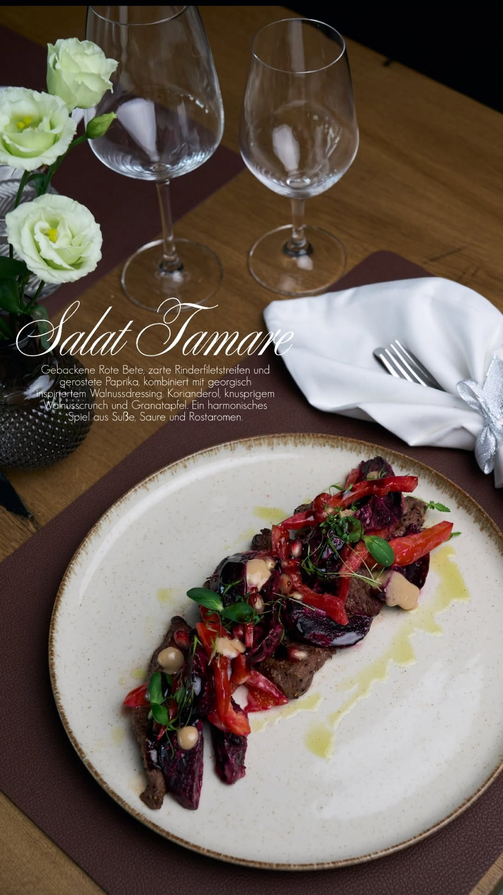
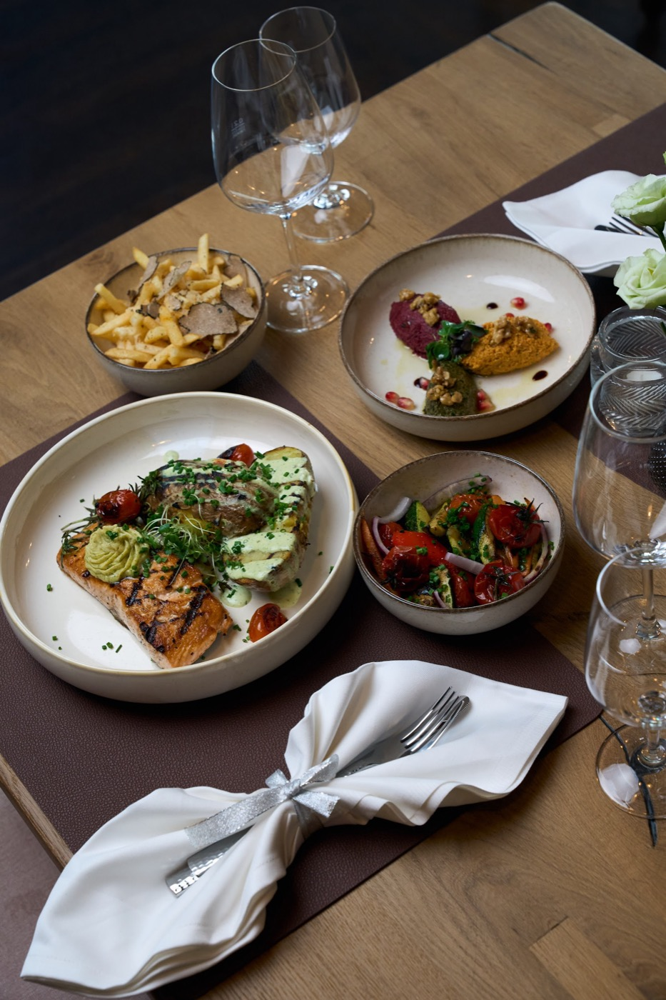
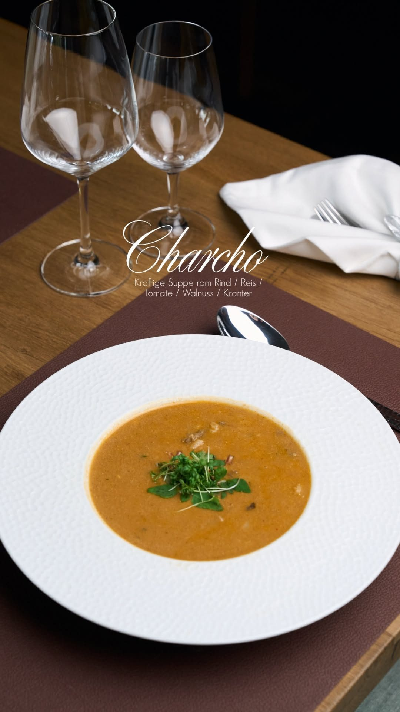
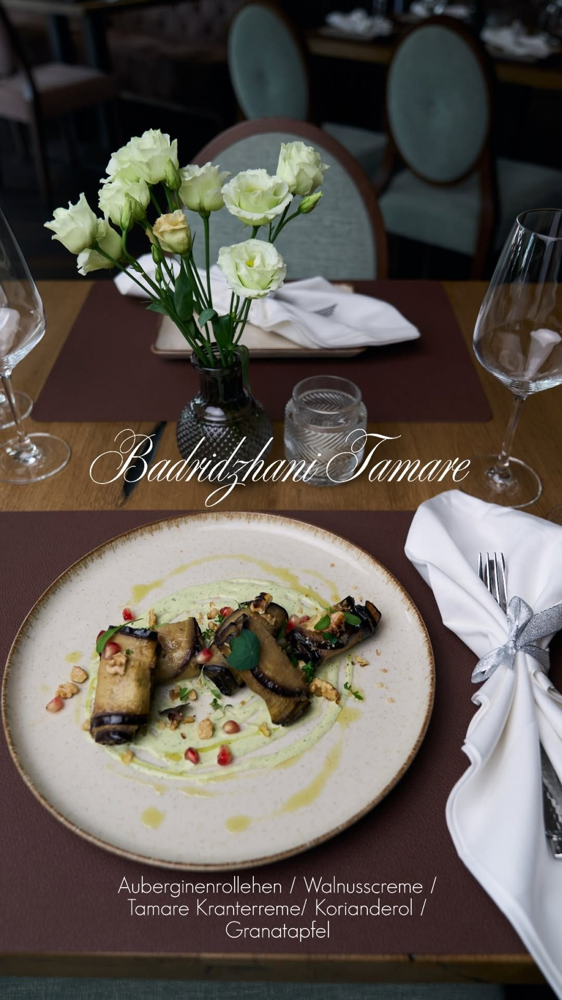
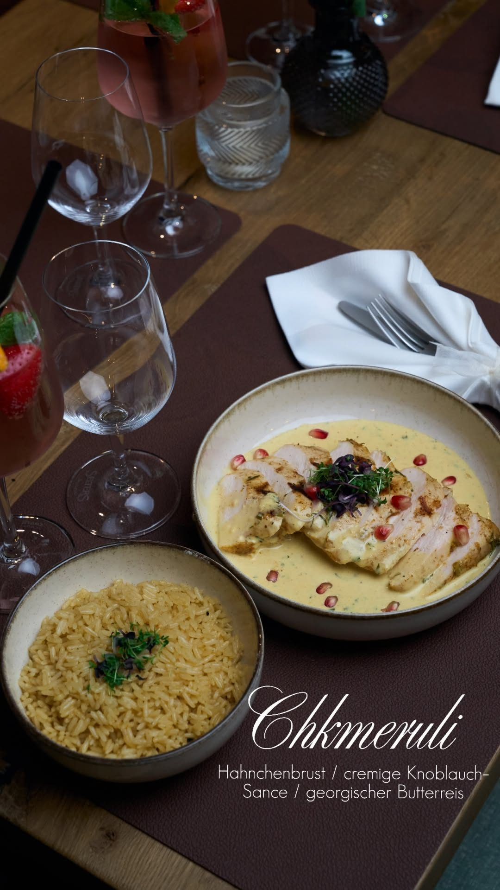
Alle Preise in Euro inklusive gesetzlicher MwSt. Abweichungen und saisonale Empfehlungen sind möglich.
Hinweise zu Allergenen und Zusatzstoffen erhalten Sie gern von unserem Serviceteam.
Weine & Champagner
Empfehlung des Hauses
Zu Fisch & Vorspeisen: Tsolikauri oder Riesling · Zu Fleisch & Schmorgerichten: Saperavi oder Saperavi Bio Qvevri · Zu Dessert & Käse: Tvishi oder Kindzmarauli
Alle Preise in Euro inklusive gesetzlicher MwSt. · Jahrgangs- und Sortenänderungen vorbehalten.
Ihren Tisch reservieren
Wählen Sie Datum, Uhrzeit und Personenzahl – Sie erhalten sofort eine Bestätigung.
Wird das Buchungsfenster nicht angezeigt? Hier direkt reservieren ↗
Für Gesellschaften ab 7 Personen bitten wir um telefonische Anfrage: +49 211 46872090. Reservierte Tische halten wir 15 Minuten frei.
So erreichen Sie uns
Tamare Restaurant
Grafenberger Allee 277
40237 Düsseldorf
+49 211 46872090
info@tamare-restaurant.de
Öffnungszeiten
Mo, Mi, Do · 16:00 – 22:00 Uhr (Küche bis 21:30)
Fr · 16:00 – 23:00 Uhr (Küche bis 22:30)
Sa · 12:00 – 23:00 Uhr (Küche bis 22:30)
So · 12:00 – 22:00 Uhr (Küche bis 21:30)
Dienstag Ruhetag
Anfahrt
Gut erreichbar über die Grafenberger Allee (B7);
Straßenbahn-Haltestellen in unmittelbarer Nähe.
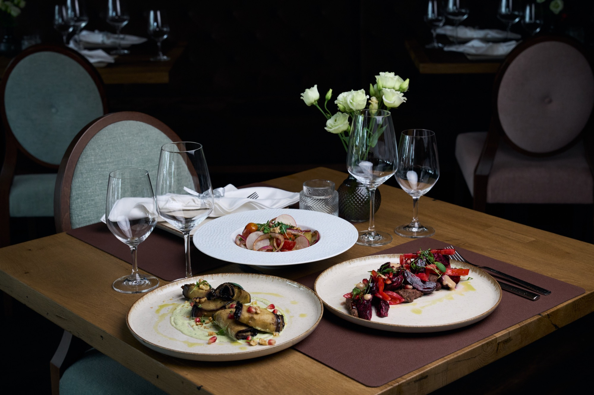
Impressum
Entwurf mit Platzhaltern nach § 5 DDG / § 18 MStV. Bitte alle [markierten Felder] ausfüllen und vor Veröffentlichung rechtlich prüfen lassen.
Angaben gemäß § 5 DDG
[Tamare Restaurant – Inhaber:in oder Firmenname mit Rechtsform, z. B. GmbH / GbR / e. K.]
Grafenberger Allee 277
40237 Düsseldorf
Vertreten durch
[Vor- und Nachname der Geschäftsführung / Inhaber:in]
Kontakt
Telefon: +49 211 46872090
E-Mail: info@tamare-restaurant.de
Registereintrag (falls vorhanden)
Eintragung im Handelsregister · Registergericht: [Amtsgericht Düsseldorf] · Registernummer: [HRB 00000]
Umsatzsteuer-ID
Umsatzsteuer-Identifikationsnummer gemäß § 27a UStG: [DE000000000]
Aufsichtsbehörde / Erlaubnis
Zuständige Behörde für das Gaststättengewerbe: [Ordnungsamt der Landeshauptstadt Düsseldorf]
Verantwortlich für den Inhalt nach § 18 Abs. 2 MStV
[Vor- und Nachname, Anschrift wie oben]
EU-Streitschlichtung
Die Europäische Kommission stellt eine Plattform zur Online-Streitbeilegung (OS) bereit: https://ec.europa.eu/consumers/odr/. Unsere E-Mail-Adresse finden Sie oben im Impressum.
Verbraucherstreitbeilegung / Universalschlichtungsstelle
Wir sind nicht bereit oder verpflichtet, an Streitbeilegungsverfahren vor einer Verbraucherschlichtungsstelle teilzunehmen. [Falls doch: entsprechend anpassen.]
Bildnachweise
Fotos und Videos: Tamare Restaurant, Düsseldorf. [Ggf. Fotograf:in ergänzen.]
Landschaftsfotos: Unsplash (Unsplash-Lizenz) – Fotografen: Patrick Schneider, Tomáš Malík, Joni Jiniani.
Datenschutzerklärung
Entwurf auf Basis der DSGVO mit Platzhaltern. Die Erklärung muss an die tatsächlich eingesetzten Dienste angepasst und rechtlich geprüft werden.
1. Verantwortlicher
Verantwortlich für die Datenverarbeitung auf dieser Website ist:
Tamare Restaurant [Inhaber:in / Rechtsform wird ergänzt]
Grafenberger Allee 277, 40237 Düsseldorf
Telefon: +49 211 46872090 · E-Mail: info@tamare-restaurant.de
2. Allgemeines zur Datenverarbeitung
Wir verarbeiten personenbezogene Daten unserer Besucherinnen und Besucher grundsätzlich nur, soweit dies zur Bereitstellung einer funktionsfähigen Website sowie unserer Inhalte und Leistungen erforderlich ist. Rechtsgrundlagen sind Art. 6 Abs. 1 lit. a DSGVO (Einwilligung), lit. b DSGVO (Vertrag bzw. vorvertragliche Maßnahmen, z. B. Reservierungen) und lit. f DSGVO (berechtigtes Interesse am sicheren Betrieb der Website).
3. Server-Logfiles
Beim Aufruf der Website erhebt unser Hosting-Anbieter [Name des Hosters, Anschrift] automatisch Informationen in sogenannten Server-Logfiles (IP-Adresse, Datum und Uhrzeit des Zugriffs, aufgerufene Seite, Browsertyp, Betriebssystem, Referrer-URL). Die Verarbeitung erfolgt auf Grundlage von Art. 6 Abs. 1 lit. f DSGVO. Die Logfiles werden nach [z. B. 7 Tagen] gelöscht. Mit dem Hoster besteht ein Vertrag über Auftragsverarbeitung (Art. 28 DSGVO).
4. Online-Reservierung über Lightspeed
Für Tischreservierungen nutzen wir das Reservierungssystem von Lightspeed (Lightspeed Commerce Inc., 700 Saint-Antoine Est, Suite 300, Montréal, Québec, H2Y 1A6, Kanada). Das Buchungsfenster wird auf unserer Reservierungsseite als eingebetteter Inhalt (iFrame) geladen; dabei wird eine Verbindung zu Servern von Lightspeed hergestellt und Ihre IP-Adresse übertragen.
Die von Ihnen im Buchungsfenster angegebenen Daten (Name, Kontaktdaten, Datum, Uhrzeit, Personenzahl, ggf. Anmerkungen) werden zur Abwicklung Ihrer Reservierung verarbeitet (Art. 6 Abs. 1 lit. b DSGVO). Mit Lightspeed besteht ein Vertrag über Auftragsverarbeitung nach Art. 28 DSGVO. Weitere Informationen finden Sie in der Datenschutzerklärung von Lightspeed unter lightspeedhq.com/privacy-policy.
5. Kontaktaufnahme
Bei Kontaktaufnahme per E-Mail oder Telefon werden Ihre Angaben zur Bearbeitung der Anfrage sowie für Anschlussfragen gespeichert (Art. 6 Abs. 1 lit. b bzw. lit. f DSGVO). Diese Daten geben wir nicht ohne Ihre Einwilligung weiter.
6. Cookies
Diese Website verwendet technisch notwendige Cookies bzw. vergleichbare Speichertechniken (z. B. zur Speicherung Ihrer Cookie-Entscheidung). Das eingebettete Reservierungssystem von Lightspeed kann eigene, für die Buchungsfunktion erforderliche Cookies setzen. Rechtsgrundlage ist § 25 Abs. 2 TDDDG sowie Art. 6 Abs. 1 lit. f DSGVO. [Falls Analyse- oder Marketing-Dienste eingesetzt werden: hier ergänzen und Einwilligung über den Cookie-Banner einholen.]
7. Externe Dienste und Inhalte
- Google Fonts: Zur einheitlichen Darstellung von Schriftarten nutzt diese Seite Schriften von Google (Google Ireland Limited, Gordon House, Barrow Street, Dublin 4, Irland). Beim Aufruf werden Verbindungen zu Google-Servern hergestellt; dabei wird Ihre IP-Adresse übertragen.
- Unsplash-Bilder: Einzelne Landschaftsfotos werden über das Content Delivery Network von Unsplash (Unsplash Inc., Montreal, Kanada) geladen; dabei wird Ihre IP-Adresse an Unsplash übertragen.
- Lightspeed Reservierung: siehe Ziffer 4.
- Instagram-Verlinkung: Unsere Website enthält einen Link zu unserem Instagram-Profil (Meta Platforms Ireland Ltd.). Es handelt sich um eine reine Verlinkung; Daten werden erst beim Aufruf von Instagram übertragen.
8. Ihre Rechte
Sie haben gegenüber uns folgende Rechte hinsichtlich Ihrer personenbezogenen Daten: Recht auf Auskunft (Art. 15 DSGVO), Berichtigung (Art. 16), Löschung (Art. 17), Einschränkung der Verarbeitung (Art. 18), Datenübertragbarkeit (Art. 20) sowie Widerspruch gegen die Verarbeitung (Art. 21). Erteilte Einwilligungen können Sie jederzeit mit Wirkung für die Zukunft widerrufen (Art. 7 Abs. 3 DSGVO).
9. Beschwerderecht
Ihnen steht ein Beschwerderecht bei einer Datenschutz-Aufsichtsbehörde zu. Zuständig für Nordrhein-Westfalen ist die Landesbeauftragte für Datenschutz und Informationsfreiheit NRW, Kavalleriestraße 2–4, 40213 Düsseldorf.
10. Aktualität
Stand dieser Datenschutzerklärung: Juli 2026. Wir passen diese Erklärung an, sobald sich die Datenverarbeitung auf dieser Website ändert.